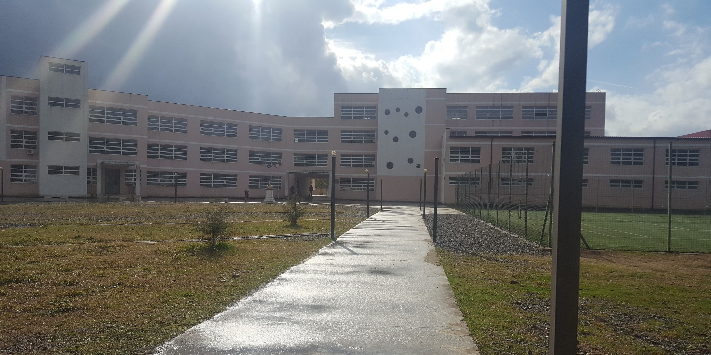

დირექტორი: ნარგიზ რომანაძე
საგანმანათლებლო სტატუსი: დაწყებითი (1-6), საბაზო (7-9), საშუალო (10-12)
მისია
სსიპ - აკაკი წერეთლის სახელობის ქალაქ ქობულეთის №1 საჯარო სკოლის მისიაა მოსწავლეთა, პროფესიულ სტუდენტთა, მსმენელთა პიროვნული/პროფესიული განვითარება, რათა ისინი ჩამოყალიბდნენ სიახლის შეცნობის მსურველ, კონკურენტუნარიან, განათლებულ მოქალაქეებად.
ფართო სპექტრის, შრომის ბაზრის მოთხოვნებზე ორიენტირებული პროფესიული საგანმანათლებლო პროგრამების შეთავაზებით სკოლა ხელს უწყობს მოსწავლეთა/პროფესიულ სტუდენტთა უწყვეტ პროფესიონალურ და პიროვნულ განვითარებას, როგორც საკვალიფიკაციო პროგრამების, ასევე, არაფორმალური აქტივობების განხორციელების გზით.
ზოგადი და პროფესიული განათლების საფუძველზე სოციალური ინკლუზიისა და მთელი სიცოცხლის განმავლობაში სწავლა/სწავლების ხელშეწყობის პრინციპებით სკოლა უზრუნველყოფს დემოკრატიული ფასეულობების მქონე მოტივირებული, კონკურენტუნარიანი და მოაზროვნე მსოფლიო მოქალაქეების აღზრდას.
ხედვა
2030 წლისათვის სკოლა იქნება საგანმანათლებლო დაწესებულება, რომელიც საზოგადოებას გაუწევს მაღალი ხარისხის საგანმანათლებლო მომსახურებას ფორმალური და არაფორმალური განათლების გზით, სადაც დაინტერესებულ პირებს შეეძლებათ როგორც ზოგადი, ასევე პროფესიული განათლების მიღება.
სკოლის კურსდამთავრებულები იქნებიან ადგილობრივი და საერთაშორისო შრომის ბაზარზე მაღალკვალიფიციური, მოთხოვნადი კადრები.
მოსწავლე
Teachers
შენობის რაოდენობა
სკოლის ტიპი